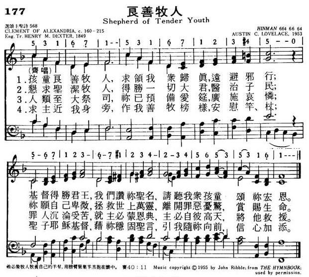
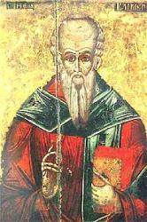

|
|
颂主新歌 |
|
1 Shepherd of tender youth, 2 You are our holy Lord, 3 You are the great High Priest, 4 O ever be our guide, 5 So now and till we die |
1.孩童良善牧人，求领我众归真，远避邪行；
|
|
https://www.mred365.cn/szxg/7180.html 
|
|
|
|
|


043良善牧人 https://youtu.be/glJeUZYD8dg - Shepherd of Tender Youth (Italian Hymn)
https://youtu.be/1uNk7HzfoQc - Shepherd of Tender Youth
https://youtu.be/ETun_bJvIY8 The
words were originally written by Clement of Alexandria and translated by
Henry M. Dexter. the tune is an original by Stephen Dubberly.
| Text: | Shepherd of Eager Youth |
| Author: | Clement of Alexandria |
| Translator: | Henry M. Dexter |
| Tune: | ITALIAN HYMN |
| Composer: | Felice de Giardini |
| Short Name: | Clement of Alexandria |
| Full Name: | Clement, of Alexandria, Saint, ca. 170-ca. 215 |
| Birth Year (est.): | 170 |
| Death Year (est.): | 215 |
Clemens, Titus Flavins (Clemens Alexandrinus), St. Clement of Alexandria,

was born possibly at Athens (although on this point there is no certain information) about A.D. 170. His full name, Titus Flavins Clemens, is given by Eusebius (H. E., vi. 13) and Photius (Cod. Ill), but of his parentage there is no record. Studious, and anxious to satisfy his mind on the highest subjects, he is said to have been a Stoic and Eclectic, and a seeker after truth amongst Greek, Assyrian, Egyptian, and Jewish teachers. He himself enumerates six teachers of eminence under whom he studied the "true tradition of the blessed doctrine of the holy apostles." At Alexandria he came under the teaching of Pantsenus, and embraced Christianity, Pantsenus being at the time the master of the Catechetical School in that city. On the retirement of Pantsenus from the school for missionary work, Clement became its head, cir. 190, and retained the position to 203. His pupils were numerous, and some of them of note, including Origen, and Alexander, afterwards Bishop of Jerusalem. Driven from Alexandria by the persecution under Severus (202-203), he wandered forth, it is not known whither. The last notice wo have of him in history is in a letter of congratulation by his old pupil, Alexander, then Bp. of Cappadocia, to the Church of Antioch, on the appointment of Asclepiades to the bishopric of that city. This letter, dated 211, seems to have been conveyed to Antioch by Clement. Beyond this nothing is known, either concern¬ing his subsequent life or death, although the latter is sometimes dated A.D. 220.
The works of Clement are
ten in all. Of these, the only work with which we have to do is The
Tutor, in three books. The first book describes the Tutor, who is the
Word Himself, the children whom He trains (Christian men and women), and his
method of instruction. The second book contains general instructions as to
daily life in eating, drinking, furniture, sleep, &c.; and the third, after
an inquiry into the nature of true beauty, goes onto condemn extravagance in
dress, &c, both in men and women. Appended to this work, in the printed
editions, are two poems; the first, "A Hymn of the Saviour), and the second,
an address "To the Tutor". The first, beginning is attributed to Clement in
those manuscripts in which it is found; but it is supposed by some to be of
an earlier date: the second is generally regarded as by a later hand .
The “Hymn of the Saviour," the earliest known Christian hymn, has been
translated into English:
The earliest translation is "Shepherd of tender youth.” This is by Dr. H. M.
Dexter (q. v.). It was written in 1846, first published in The
Congregationalist [of which Dexter was editor], Dec. 21,
1849, and is in extensive use in the United States. In Great Britain it is
also given in several collections, including the New
Congregational Hymn Book, 1859; Baptist Psalms & Hymns,
1858; the R. T. Society's Collection, &c.
There are also translations not in common use, viz.: (1) "Bridle of colts
untamed," by Dr. W. L. Alexander, in the Ante-Nicene
Christian Library, vol. iv. p. 343; (2) "Bridle of colts untaught," by
Dr. H. Bonar, in The Sunday at Home, 1878, p. 11. (3)
Another translation is by the Rev. A. W. Chatfield, in his Songs
and Hymns of the Earliest Greek Christian Poets, 1876. Mr. Chatfield,
following the Anth. Graeca Car. Christ., 1871, p. 37,
begins with the eleventh line: "O Thou, the King of Saints, all-conquering
Word." His translation extends to 40 lines.
--Excerpts from John Julian, Dictionary of Hymnology (1907)
Tune Information
| Title: | ITALIAN HYMN |
| Composer: | Felice de Giardini |
| Meter: | 6.6.4.6.6.6.4 |
| Incipit: | 53121 71123 45432 |
| Key: | G Major |
| Copyright: | Public Domain |

Notes
Felice de Giardini (b. Turin, Italy, 1716; d. Moscow, Russia, 1796) composed ITALIAN HYMN in three parts for this text at the request of Selina Shirley, the famous evangelically minded Countess of Huntingdon. Giardini was living in London at the time and contributed this tune and three others to Martin Madan's Collection of Psalm and Hymn Tunes (1769), published to benefit the Lock Hospital in London where Madan was chaplain.
Giardini achieved great musical fame throughout Europe, especially in England. He studied violin, harpsichord, voice, and composition in Milan and Turin; from 1748 to 1750 he conducted a very successful solo violin tour on the continent. He came to England in 1750 and for the next forty years lived in London, where he was a prominent violinist in several orchestras. Giardini also taught and composed operas and instrumental music. In 1784 he traveled to Italy, but when he returned to London in 1790, Giardini was no longer popular. His subsequent tour to Russia also failed, and he died there in poverty.
ITALIAN HYMN appears in most hymnals, sometimes with small variants when compared to the original melody, as in the Psalter Hymnal. Named for its composer's homeland, ITALIAN HYMN is also known as MOSCOW (where Giardini died) and TRINITY (after the theme of the hymn text).
This vigorous tune needs strong rhythmic accompaniment. Think one broad beat per measure. The doxological stanza can be taken more majestically.
--Psalter Hymnal Handbook
Words: Titus Flavius Clemens, called Clement of
Alexandria (b. circa 170; d. circa 220)
Music: Italian Hymn, by Felice de Giardini (b. Apr. 12,
1716; d. June 8:1796)
Links:
Wordwise Hymns
The Cyber
Hymnal
Note: This hymn’s title, and its first line, are sometimes rendered Shepherd of Eager Youth. Clement produced the original around A.D. 200, making it the earliest hymn we have from the post-apostolic era. Henry Dexter (1821-1890) made a literal translation of Clement’s work, then versified his English translation. The Cyber Hymnal lists a number of tunes used with the hymn, including Italian Hymn, to which we also sing, Come, Thou Almighty King. The original of Clement’s work said, in part:
Shepherd of royal lambs
Assemble Thy simple children
To praise holily, to hymn guilelessly
With innocent mouths.
Titus Flavius Clemens (Clement) was a convert from paganism. Ordained a presbyter, he became head of the catechetical school of Alexandria. Origen was one of his pupils. The hymn, entitled “Hymn of the Saviour Christ,” appears at the end of his book The Tutor. Though it is often found in our hymnals under “Children’s Hymns,” the song was written to instruct new converts, who perhaps were not all preteens. It does, however, make a fine hymn for children.
CH-1) Shepherd of tender youth, guiding in love and truth
Through devious ways; Christ our triumphant King,
We come Thy name to sing and here our children bring
To join Thy praise.
Clement reported vividly of the hymn singing of the early church, showing just how much sacred music played a part in not only the formal worship but the daily lives of Christians at that time.
“We cultivate our fields, praising; we sail the sea, hymning….[The believer’s] whole life is a holy festival. His sacrifices are prayers and praises, and Scripture readings before meals, psalms and hymns during meals and before bed, and prayer again during night. By these he unites himself to the heavenly choir.”
The present hymn centres on the Lord Jesus Christ, and His work on our behalf in the past (at Calvary), and the present (cf. Eph. 5:25-27). On the cross, the Lord Jesus willingly humbled Himself to pay the debt of our sin.
CH-2) Thou art our holy Lord, O all subduing Word,
Healer of strife. Thou didst Thyself abase
That from sin’s deep disgrace Thou mightest save our race
And give us life.
Now, Christ is our “great High Priest” at the Father’s right hand (Heb. 4:14-16), there to intercede for us (Heb. 7:25), and serve as our heavenly Advocate (I Jn. 2:1-2).
CH-3) Thou art the great High Priest; Thou hast prepared the feast
Of heavenly love; while in our mortal pain,
None calls on Thee in vain; help Thou dost not disdain,
Help from above.
In addition, Christ is ever-present with us (Matt. 28:20), guiding and directing us as our loving Shepherd (Ps. 23:1-6).
CH-4) Ever be Thou our Guide, our Shepherd and our Pride,
Our Staff and Song; Jesus, Thou Christ of God,
By Thine eternal Word lead us where Thou hast trod,
Make our faith strong.
Questions:
1) What are some of the Bible truths in this hymn that it would be
important to teach our children?
2) How many times can you recall hearing (or preaching yourself) a message on the present ministries of Christ?
3) Take another look at what Clement said about the hymn singing of his day. Do we come anywhere near this now? Why? (Or why not?)
Links:
Wordwise Hymns
The Cyber
Hymnal
https://wordwisehymns.com/2012/08/29/shepherd-of-tender-youth/
革利免 (亞歷山大城) Titus Flavius Clemens 150－215[編輯]
提圖斯·弗拉維烏斯·革利免（拉丁語：Titus Flavius Clemens；150年－約215年[註 1]）是基督教神學家，基督教早期教父，亞歷山大學派的代表人物。為了跟同名的教宗克肋孟一世（即羅馬的聖革利免，Clemens Romanus）區分，而常被稱為亞歷山大城的聖革利免（古希臘語：Κλήμης ὁ Ἀλεξανδρεύς，Clement of Alexandria）。
潘代諾的門生，他繼承了潘氏的聖道學校。他出生於富有希臘哲學思想的雅典城，雖然是出生在非正統的基督信仰下，但卻於180年到亞歷山大城定居，此時革利免才開始接觸基督教並與潘代諾所主持的聖道學院建立關係。
他曾基督宗教被廣泛尊奉為聖人，但在1586年，被羅馬天主教會教宗西斯都五世移除資格，天主教會已不再尊奉他。但東方正教、東儀天主教會與聖公宗仍然視他為聖人。
生平[編輯]
革利免出生於西元第二世紀，位於地中海充滿古希臘哲學思想的雅典城，革利免從小研習於希臘哲學思想，耳濡目染伯拉圖與斯多亞主義的學派，這樣的環境造就了喜愛思考的意識，也因為有這樣的基礎，他在信仰基督之後將基督教信仰融合希臘哲學思想，也因為在亞歷山大不受到當時古大公教會對哲學的批判，所以哲學思想成為基督教的思想工具。200年為信仰被放逐到該撒利亞，215年殉道。俄立根的好友亞歷山大曾寫信給俄立根說到：「我們知道這些蒙福的先祖。他們在我們之前所走過的道路，也是我們所當走的。潘代諾是真正蒙福的人，是我的尊教。而聖潔仁慈的革利免，也是我的主、我的恩師。在所有蒙福的先祖當中，他們使我們更認識我們的主，那超越眾弟兄者。」
亞歷山太學派[編輯]
在亞歷山太的環境底下不受大公教會的逼迫，所以革利免的洛各思思想在此地相當的興盛，而代表人物就是亞歷山太的革利免，同時他又是教會長老，繼承了潘氏的聖道學校，所以成為當時基督教在教會與學術間的聯繫的重要人物。
學術方面革利免可以稱為博學多聞的希臘哲學思想家，他用了正統基督教不敢用的哲學方式來解釋基督教信仰，他論到說基督是那智慧的來源，也就是人類一切的心智道德源頭，他說到：「我們的訓導者，乃是聖潔的上帝、耶穌、道，他是全人類的導師。」，是一切真正的源頭。因此他的思想遠遠超過游斯丁。
希臘人開啟了哲學思想的大門而律法在希伯來人是重要的生活標準，因著這樣的文化背景而生活著，那麼這樣的思想可以說為要吸引人更認識基督。對革利免來說他的思想可以說是充滿著洛各思的知識，並不關心於基督在世所關心世人的一切。
革利免把洛各思的神學發展得更加成熟，這種神學觀始於使徒約翰講論道的觀念，而革利免將基督教道的思想闡釋基督信仰。
革利免認為聖經可能包含
- 歷史意義：就是把舊約聖經的故事，當作是歷史上的實際事件。
- 教義意義：就是聖經中明顯的道德、宗教、和神學教訓。
- 預言意義：包括預告性的預言和預表。
- 哲學的意義：就是按照希臘斯多亞派(Stoics)所看的宇宙和精神的意義。
- 奧秘意義：事件或人物所象徵的更深一層之道德的、靈性的、宗教的真理。[1]
直到二世紀末，基督教會還未採納寓意解釋。潘代諾Pantaenus(180年)是亞歷山太派的教師，他是一位採納寓意解釋法的人，亞歷山太的革利免及俄利根，自然深受其寓意解經影響。在聖經的寓意解釋上，偏重把舊約當作各種神諭的神秘全集，所有的事都指向基督。
著作[編輯]

.jpg){kind=link}
著有《異教徒的勸勉》、《導師基督》、《雜記》……等。
- 《異教徒的勸勉Exhortations to the Greeks》對象是撰寫給希臘人的勸告，期望他們歸信基督。
- 《導師基督Instructor》是針對討論基督生平言行的論述作品。
- 《雜記Stromata or Miscellanies》是自己對基督宗教與在神學信仰上的隨手記錄。
- 《What Rich Man May Be Saved》。
- 《An Address to New Converts》是給新入教的人。
- 《Ecclesiastical Canon》、《An Address to the Judaizing Christians》。
- 還有一本書是關於逾越節，並且也有關於禁食和譭謗的辯論，勸告他們需要忍耐。
詩歌[編輯]
這是亞歷山太的革利免的詩歌作品，收集於頌主新歌，第177首。歌詞在下，旋律已不可考。
- 歌名：良善牧人。[2]
- 歌詞：亞歷山太的革利免, c. 160-215
- 1.孩童良善牧人，求領我眾歸真，遠避邪行；
- 基督得勝君王，我們讚美禰聖名，請聽我眾孩童頌禰宏恩。
- 2.懇求聖潔牧人，得勝一切大君，醫治子民；
- 禰願自己卑微，拯救世上萬靈，離開罪惡憂驚，賞賜生命。
- 3.人類至大祭司，禰已預備愛筵，廣施哀憐；
- 罪人沉淪受苦，就主必蒙恩典，主必自彼高天，將他救援。
- 4.求主近我身旁，作我善牧榜樣，安慰、竿杖；
- 聖子耶穌基督，藉禰穩固聖言，引我隨禰向前，信心加添。
Shepherd of Tender Youth
- Words:Clement of Alexandria, c. 160-215
- 1.Shepherd of tender youth,
guiding in love and truth.
- Through devious ways; Christ our triumphant King,
- We come Thy Name to sing and here our children bring.
- To join Thy praise.
- 2.Thou art our holy Lord, O
all subduing Word,
- Healer of strife. Thou didst Thyself abase.
- That from sin’s deep disgrace.Thou mightest save our race.
- And give us life.
- 3.Thou art the great High
Priest;Thou hast prepared the feast.Of holy love;
- and in our mortal pain,None calls on Thee in vain;
- Help Thou dost not disdain,Help from above.
- 4.Ever be Thou our guide, our
shepherd and our pride,
- Our staff and song; Jesus, Thou Christ of God,
- By Thine enduring Word lead us where Thou hast trod,
- Make our faith strong.
- 5.So now, and till we die,
sound we Thy praises high.
- And joyful sing; infants and the glad throng.
- Who to Thy church belong,unite to swell the song.
- To Christ, our King.
注釋[編輯]
- ^ 逝世於211年至216年之間
參考文獻[編輯]
延伸閱讀[編輯]
- 比爾·奧斯丁。《基督教發展史》。馬傑偉、許建人譯（香港：種子出版社有限公司，2002）。
- 羅金聲。《東方教會史》。（香港：香港聖書公會）。
- 華爾克。《基督教會史》。謝受靈譯（香港：基督教文藝出版社，2005）。
- John McMannners。（牛津基督教史）。張景龍等譯（貴州：牛津大學出版社，1996)。
- 陶理著。《基督教二千年史》。李伯明、林牧野譯。（香港：海天書樓，1997）。
- 黃彼得。《認識基督教史略》。（香港，金燈臺出版社，2005）。